鞍山市铁东区胜利小学欢迎您！
首页 > 详情信息
2021年4月18日上午8：30-10：30，我校全体教师集中西校区参加本学期第二次（总第99次）“三环五步”教科研活动。
首先由六位老师进行课堂展示。
语文组的沈晓唯老师执教了一年级册下的《树和喜鹊》。沈老师的课堂目标十分清晰，指导学生读字、读词、读句，课堂扎实有效，学生的进步明显。沈老师采用了初读感悟、再读理解等读悟结合方法，让学生通过思考、朗读等方法，理解课文内容，让学生参与到教学活动中来，从“学会”向“会学”转变成为真正意义上学习的主体。
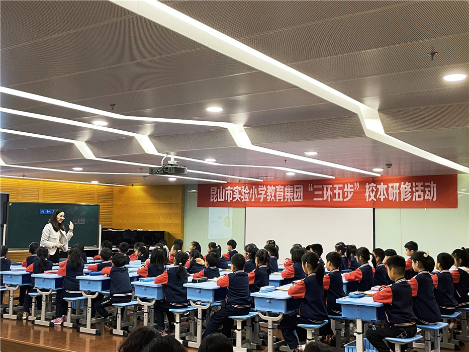
数学组的刘燕红老师执教四下《三角形的三边关系》。本节课中，学生动手操作和自主总结归纳十分重要。因此教师着重培养学生在数学学习中的探究能力和逻辑思维能力。动画的演示让围成三角形的过程更加清晰，同时也能吸引学生的注意力，提高学习兴趣。
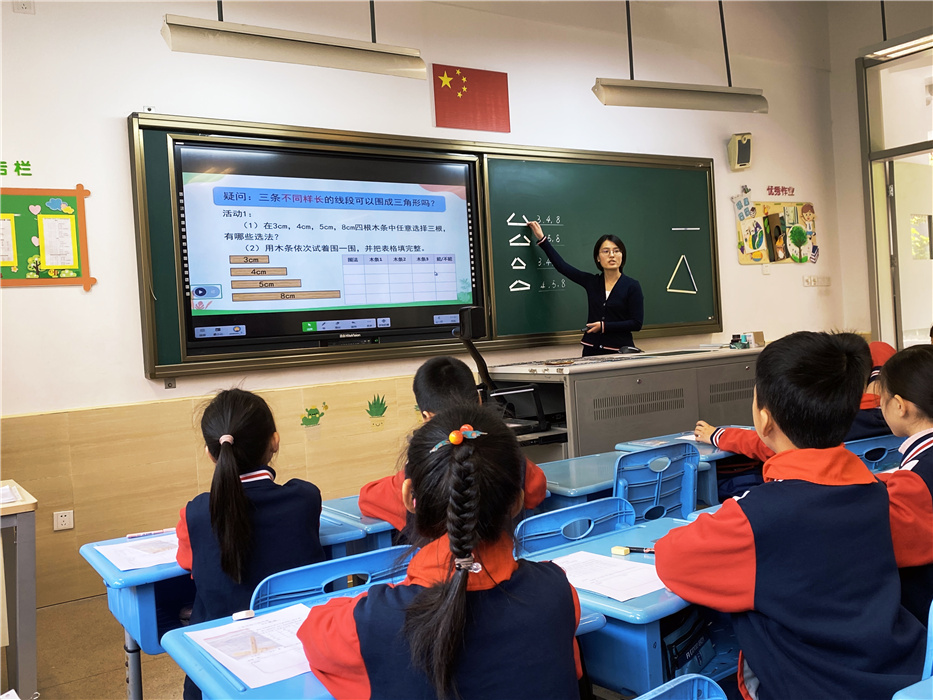
英语组的邓志燕老师执教三下《3B Unit5 How old are you》。精致的多媒体课件、漂亮的简笔画、可爱的图片、动感的声效、栩栩如生的视频动画都成了本节课的亮点。邓老师更注重生活中的资源的运用，教学节奏层层推进,每个任务都能循序渐进,完成效果好。
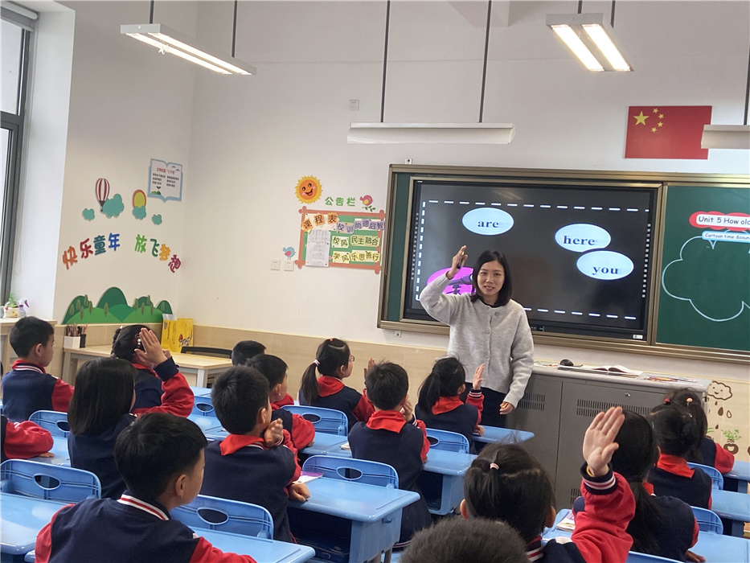
体育组的刘思哲执教三下《脚内侧踢球》。脚内侧踢球是小学三年级小足球与游戏单元的内容，是小学生非常喜爱的教学内容。本节课着重丰富多彩的游戏，感受小足球挑战的乐趣，较好培养学生的自信力、意志力、耐挫力，发展学生得协调力，提高学生的力量、协调等身体素质。
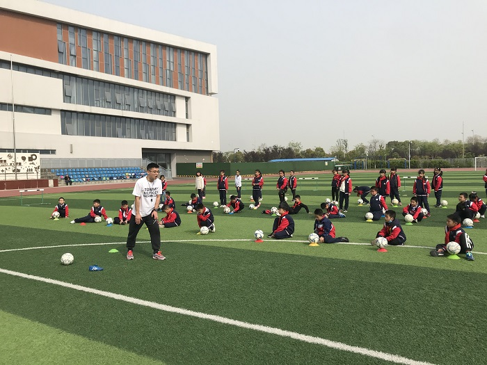
艺术组王意老师执教美术课《二下画夜景》。王老师教学目标明确，引导学生体验美术学习活动的乐趣，在创作中激发探索欲，培养个性。 王老师带领学生认识深浅色使画面产生的对比效果，通过对夜景的观察、回忆和感受，表现夜景的美感。
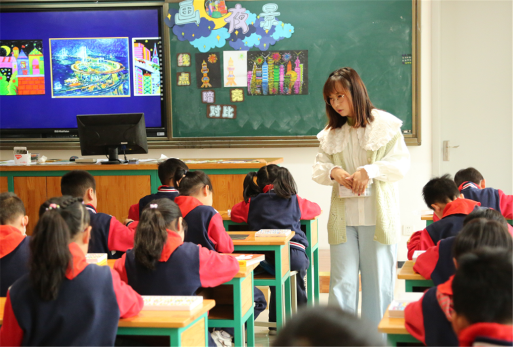
科技组的钱一慧老师执教科学课五下《热是怎样传递的》。钱老师注重引导学生亲历科学探究活动，在探究中，学生主动建构的知识，在他们心中真正获得新知和深层理解。
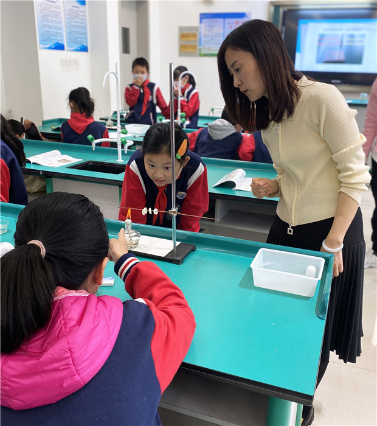
之后，进入评课环节。先由六位老师进行说课，大家阐述了自己的教学目标、设计意图、课堂的生成状况，然后由骨干教师进行评课。
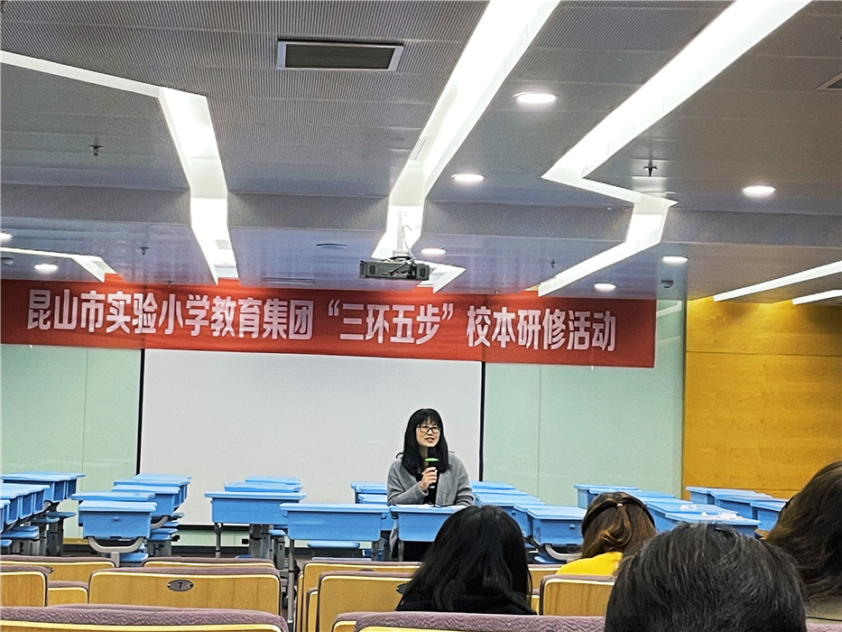
语文组评课
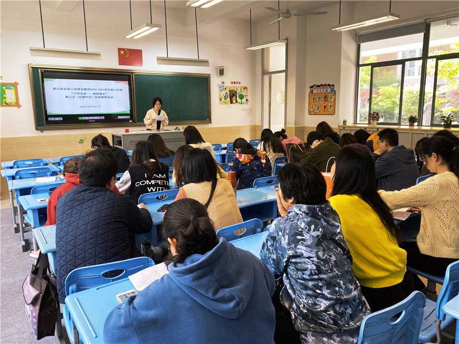
数学组评课
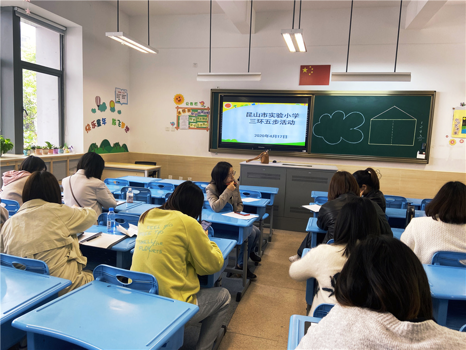
英语组评课
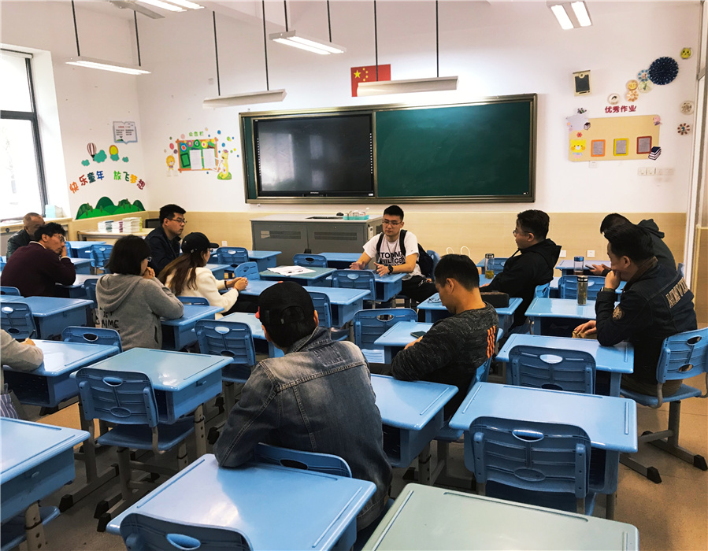
体育组评课
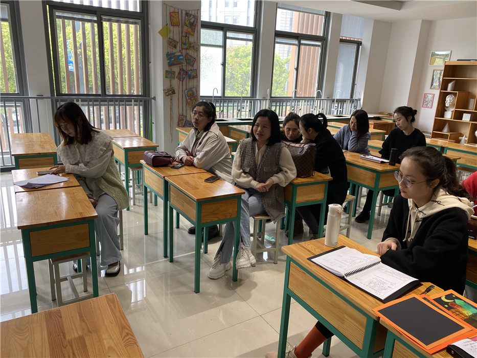
美术组评课
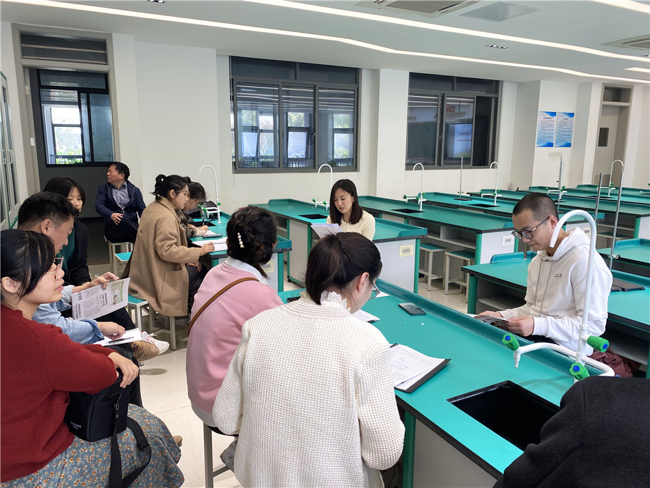
科技组评课
课堂是老师的主要阵地。今天的活动让老师们对于课堂教学方法有了更多、更新、更深的认识，也为智慧实小营造了浓厚的学术研讨氛围，推动了学校教科研发展。